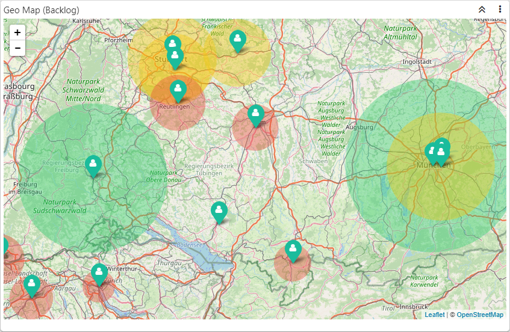
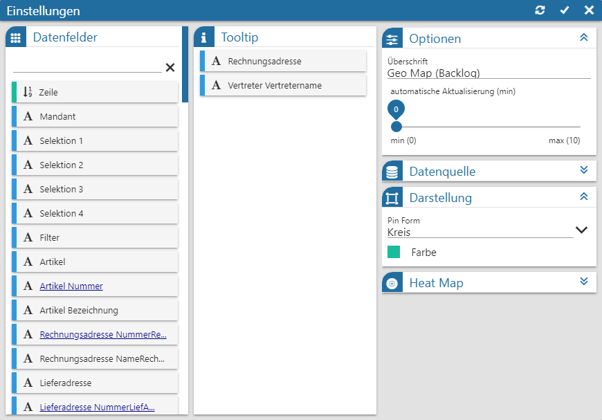
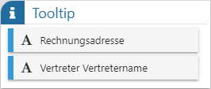
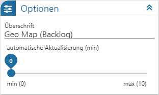
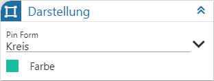
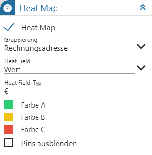

Power Report - Widgets - Geo Map

Das Datenmaterial wird in Form einer Geo Map dargestellt. Grundvoraussetzung hierfür ist eine aktive Internetverbindung, da das Kartenmaterial zur Laufzeit geladen wird.
Einstellungen

Folgende Eingabefelder, Einstellungen und Informationen stehen zur Verfügung:
Datenfelder

Ø Tabelle "Datenfelder"
In dieser Tabelle werden alle Felder der Datenquelle dargestellt, welche per Drag & Drop in die Tabelle "ToolTip" übergeben werden können. Der Power Report unterscheidet hierbei nach den folgenden Datentypen:
ü  - Alphanumerisch
- Alphanumerisch
Es handelt sich um ein
Feld mit alphanumerischen Inhalt.
ü  - Text
- Text
Es handelt sich um ein Feld mit
Langtext.
ü  - Bild (Grafik)
- Bild (Grafik)
Es handelt sind um ein
Feld mit einem Bild als Inhalt. Zur besseren Darstellung wird anstatt der Grafik
der Name des Bilds im Widget angezeigt.
ü  - Datum
- Datum
Es handelt sich um ein Feld des
Typs "Datum".
ü  - Zahl (Measure)
- Zahl (Measure)
Es handelt sich um ein
Feld mit numerischen Inhalt.
Hinweis
Mit Hilfe der Suchzeile kann über eine Volltextsuche nach Datenfeldern gesucht werden, wobei das %-Zeichen als Platzhalter verwendet werden kann.
ToolTip

Ø Tabelle "ToolTip"
In dieser Tabelle kann die Anzeige des ToolTips für die einzelnen Pins definiert werden.
Optionen

Ø Überschrift
An dieser Stelle wird die Bezeichnung der Geo Map definiert.
Ø automatische Aktualisierung (min)
An dieser Stelle kann definiert werden, ob sich der Inhalt der Kachel automatisch aktualisieren soll. Mit der Einstellung "0" findet keine Aktualisierung statt.
Datenquelle

Ø Datenquelle
Dieses Informationsfeld zeigt den Namen der zu Grunde liegenden Datenquelle an.
Ø Datenherkunft
An dieser Stelle kann mit Hilfe einer Auswahlliste definiert werden, aus welchem Bereich der Datenquelle die Daten des Widgets stammen sollen. Die Auswahl "aktuell" steht immer zur Verfügung und spiegelt die im Ausgangsfenster gewählte Datenquelle (temporäre Datenquelle, Snapshot, View oder MasterView) wieder.
Hinweis
Gibt es für die Datenquelle mehrere Snapshots, so sind diese über den Eintrag "xxx (statisch)" (xxx => Name der Auswertung) zusammengefasst. Innerhalb der Snapshots erfolgt die weitere Selektion über den Widget Filter.
Ø  Widget Filter
Widget Filter
Durch Anwahl dieses Buttons wird das Fenster Widget Filter geöffnet. In diesem kann die genutzte Datenquelle nach frei definierbaren Kriterien eingeschränkt werden.
Hinweis
Handelt es sich nicht um eine importiere Datenquelle, so werden die folgenden Selektionskriterien automatisch vorgegeben, wobei ein Editieren selbstverständlich möglich ist:
ü Mandant
Es wird durch die
Filterzeile "Mandant = aktuell" automatisch auf die Daten des aktuellen Mandaten
eingegrenzt.
ü Selektion 1 bis 4 / Filter
Es
wird automatisch auf die Daten jenes Snapshots eingegrenzt, über welchen der
Power Report ausgegeben wurde. Die Filterzeilen hierzu lauten "Selektion X =
aktuell" bzw. "Filter = aktuell".
Hinweis
Mit Hilfe des Widgets Datenquellen Info ist jederzeit nachvollziehbar, was sich gerade hinter "aktuell" verbirgt (Einstellung "Aktuelle Sel.").
Darstellung

Ø Pin Form
Hier kann eingestellt werden, welche Form die Pins in der Karte haben sollen.
Ø Farbe
An dieser Stelle kann die Farbe der Pins definiert werden.
Heat Map

Ø Heat Map
Mit Hilfe dieser Option kann die Head Map-Funktion aktiviert werden. Dadurch werden die nachfolgenden Felder angezeigt.
Ø Gruppierung
Angabe des Elements, nach welchen das Datenmaterial zusammengefasst werden soll. Im Standard sollte das Gruppierungskennzeichen dem Pin entsprechend, d.h. des zugrundeliegenden Adresselements.
Ø Heat Field
Wenn ein Heat Map gebildet werden soll, dann geschieht dieses Anhand eines Zahlenwerts. Dieser wird hier zugewiesen.
Ø Heat Field-Typ
Für den Zahlenwert im ToolTip kann hier ein Zusatz definiert werden, d.h. was "ist" die Zahl.
Ø Farbe A bis C
Aufgrund der Gruppierung wird das Zahlenmaterial in 3 Kategorien einsortiert, wobei jeder Kategorie an dieser Stelle eine Farbe zugewiesen werden kann:
ü A = Heat Field der höchsten Kategorie
ü B = Heat Field der mittleren Kategorie
ü C = Heat Field der niedrigsten Kategorie
Ø Pins ausblenden
Durch Aktivierung dieser Optionen werden bei aktivierter Head Map keine Pins mehr dargestellt.
Buttons

Ø Aktualisierung
Mit Hilfe dieses Buttons werden die Einstellungen gespeichert, direkt angewendet und das Einstellungsfenster bleibt geöffnet.
Ø Ok
Durch Anwahl des Buttons "Ok" werden die Änderungen angewendet und das Fenster geschlossen.
Ø Ende
Durch Anwahl des Buttons "Ende" wird das Einstellungsfenster geschlossen und nicht gespeicherte Änderungen verworfen.